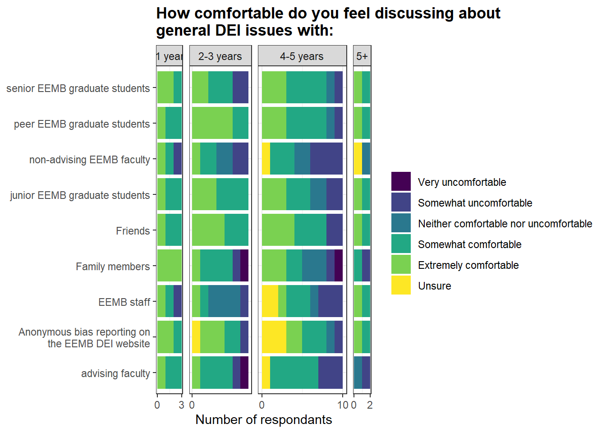
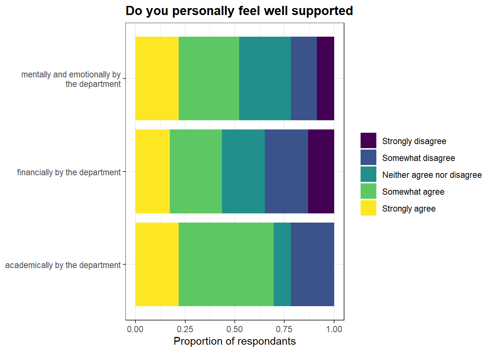
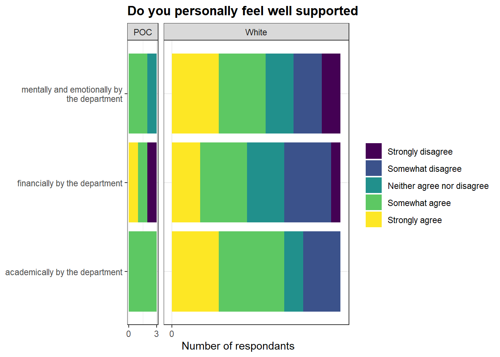
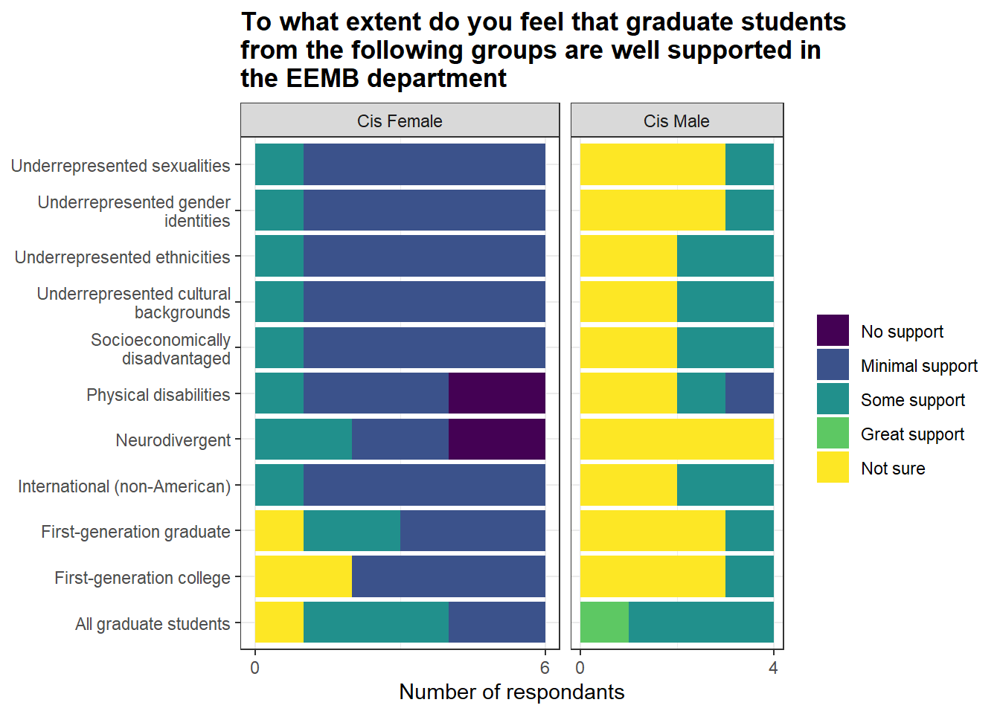
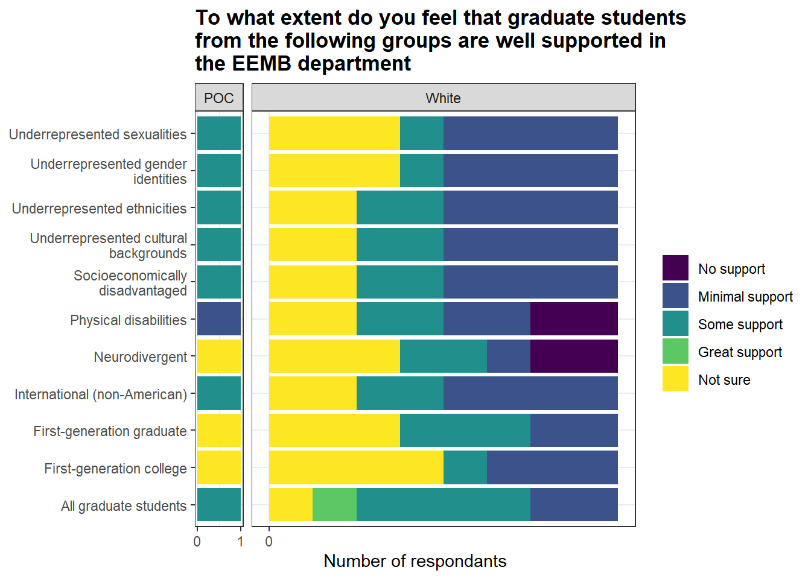
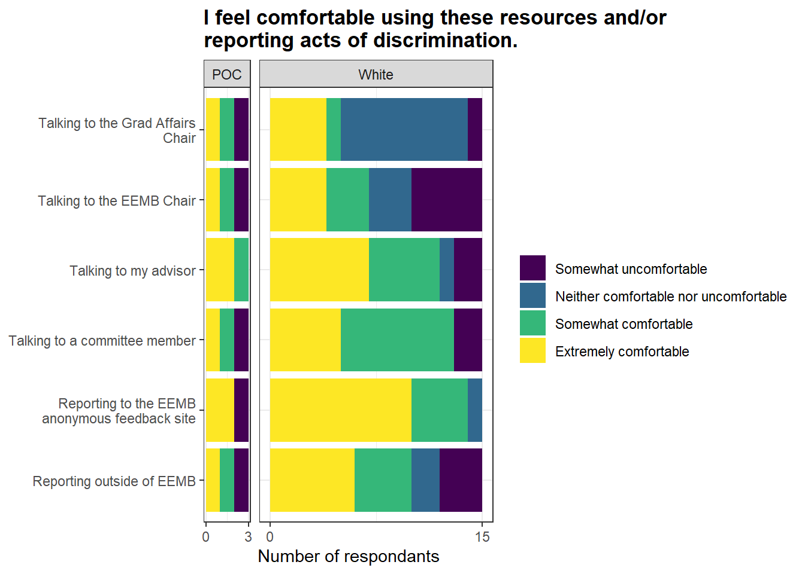

## questions in a useable format
questions <- read_csv("eemb_dei_colrename.csv") %>%
unite("newcolnames", c(colnames, category), sep = ":", na.rm=T, remove=F)
## these are the questions to be analyzed
questions %>%
filter(!str_detect(newcolnames, "longanswer"),
# !str_detect(newcolnames, "demograph"),
!str_detect(newcolnames, "other"),
!str_detect(newcolnames, "confirm")) %>%
select(question)EEMB DEI Report - 2022/23
Load Data
These are the questions to be analyzed after omiting long responses (eg what “Other” means, “define diversity”) and demographic information.
In the dataset analyzed the shorter names for the questions are as follows after removing extra text:
(questions.short <- questions %>%
filter(!str_detect(newcolnames, "longanswer"),
# !str_detect(newcolnames, "demograph"),
!str_detect(newcolnames, "other"),
!str_detect(newcolnames, "eemb_support"),
!str_detect(newcolnames, "confirm")) %>%
mutate(across(everything(), ~ str_replace_all(., "well-being", "wellbeing"))) %>%
separate(question, c("question", NA), sep = "\\?") %>%
separate(question, c("question", NA), sep = "-") %>%
select(question, colnames) %>%
mutate(question = str_remove_all(question, "\nUnderrepresented background: belonging to an identity group that has been historically and systematically excluded from higher education and other rights or opportunities, and is therefore currently less present or less visible in our department than they would be if the demographics of our community matched those of the broader population."),
question = str_remove_all(question, "(financially, mentally, emotionally, academically, etc.)"),
question = str_remove_all(question, "Please identify how available support is for each item based on your experience as a graduate student in EEMB.\nSupport can mean \"the department provides this resource\" or \"the department shows me where to find this resource\". "),
question = str_remove_all(question, "(We are primarily interested in TA experiences for EEMB courses with EEMB faculty/staff.) "),
question = str_remove_all(question, "(Science by the Pint, Happy Hour, Tea Time, Seminars)"),
question = str_remove_all(question, "\\("),
question = str_remove_all(question, "\\)")) %>%
distinct()) Warning: Expected 2 pieces. Missing pieces filled with `NA` in 51 rows [1, 2, 3, 4, 5,
6, 7, 8, 9, 10, 11, 12, 29, 30, 31, 32, 33, 34, 35, 37, ...].Warning: Expected 2 pieces. Additional pieces discarded in 5 rows [7, 37, 39,
40, 55].Warning: Expected 2 pieces. Missing pieces filled with `NA` in 56 rows [13, 14, 15, 16,
17, 18, 19, 20, 21, 22, 23, 24, 25, 26, 27, 28, 29, 64, 65, 66, ...].Load the survey data and assign levels to all of the multilevel responses
## raw survey
raw <- read_csv("EEMB Grad Student Climate Survey.csv", skip = 1) %>%
select(-1)
mc <- raw
colnames(mc) <- questions$newcolnames
mc <- mc %>%
select(-contains("longanswer"),
# -contains("demographic"),
-contains("other"),
-contains("eemb_support"),
-confirm)
colnames(mc) [1] "dei_conversations:Friends"
[2] "dei_conversations:Family members"
[3] "dei_conversations:peer EEMB graduate students"
[4] "dei_conversations:junior EEMB graduate students"
[5] "dei_conversations:senior EEMB graduate students"
[6] "dei_conversations:advising faculty"
[7] "dei_conversations:non-advising EEMB faculty"
[8] "dei_conversations:EEMB staff"
[9] "dei_conversations:Anonymous bias reporting on the EEMB DEI website"
[10] "personally_supported:academically by the department"
[11] "personally_supported:financially by the department"
[12] "personally_supported:mentally and emotionally by the department"
[13] "eemb_issues:Lack of graduate students from underrepresented backgrounds"
[14] "eemb_issues:Bias against graduate students from underrepresented backgrounds"
[15] "eemb_issues:General lack of support for graduate students from underrepresented backgrounds"
[16] "eemb_issues:Lack of invited speakers from underrepresented backgrounds"
[17] "eemb_issues:Lack of faculty from underrepresented backgrounds"
[18] "group_supported:All graduate students"
[19] "group_supported:First-generation college"
[20] "group_supported:First-generation graduate"
[21] "group_supported:Socioeconomically disadvantaged"
[22] "group_supported:Underrepresented cultural backgrounds"
[23] "group_supported:Underrepresented ethnicities"
[24] "group_supported:International (non-American)"
[25] "group_supported:Underrepresented gender identities"
[26] "group_supported:Underrepresented sexualities"
[27] "group_supported:Physical disabilities"
[28] "group_supported:Neurodivergent"
[29] "discrimination_resources"
[30] "discrimination_reporting:Talking to my advisor"
[31] "discrimination_reporting:Talking to the EEMB Chair"
[32] "discrimination_reporting:Talking to the Grad Affairs Chair"
[33] "discrimination_reporting:Talking to a committee member"
[34] "discrimination_reporting:Reporting to the EEMB anonymous feedback site"
[35] "discrimination_reporting:Reporting outside of EEMB"
[36] "eemb_dei_meeting_frequency"
[37] "factors:Non-academic support from research advisors, including committee advisors"
[38] "factors:Academic support from peers"
[39] "factors:Non-academic support from peers"
[40] "factors:Approachability of non-advising faculty"
[41] "factors:Approachability of department staff"
[42] "factors:Sense of department camaraderie"
[43] "factors:Mentorship opportunities"
[44] "factors:Spirituality/religion"
[45] "factors:Social life"
[46] "factors:Family life"
[47] "factors:Spending time outdoors"
[48] "eemb_strengths_weaknesses:Mental Health"
[49] "eemb_strengths_weaknesses:Physical Health"
[50] "eemb_strengths_weaknesses:Physical Safety"
[51] "eemb_strengths_weaknesses:Food security"
[52] "eemb_strengths_weaknesses:Financial security"
[53] "eemb_strengths_weaknesses:Sense of department camaraderie"
[54] "eemb_strengths_weaknesses:Academic support from research advisors, including committee advisors"
[55] "eemb_strengths_weaknesses:Approachability of non-advising faculty"
[56] "eemb_strengths_weaknesses:Approachability of department staff"
[57] "eemb_strengths_weaknesses:Mentorship opportunities"
[58] "eemb_strengths_weaknesses:Spirituality/religion"
[59] "eemb_strengths_weaknesses:Social life"
[60] "eemb_strengths_weaknesses:Family life"
[61] "eemb_strengths_weaknesses:Spending time outdoors"
[62] "finances:Monthly salary ($, current spring quarter 2023)"
[63] "finances:Monthly cost of living currently ($, rent, food, gas, internet, dependency care, etc.)"
[64] "monthly_bills"
[65] "financially_supported:Teaching assistantship"
[66] "financially_supported:Summer block grant"
[67] "financially_supported:Graduate student research assistantship"
[68] "financially_supported:Conference travel"
[69] "financially_supported:Research support for research project"
[70] "financially_supported:Emergency support"
[71] "financially_supported:Research support for objects or consummables that may be personally supplied (computer, car, software)."
[72] "financially_supported:Mentoring students"
[73] "financially_supported:Service work provided to the department (organizing seminars, events, etc.)"
[74] "eemb_ta:Time dedicated to TA'ing is reasonable and assigned tasks can be accomplished within the hours that I am paid for."
[75] "eemb_ta:TAs are not expected to carry out tasks outside the scope of their contracts."
[76] "eemb_ta:There is sufficient training given to graduate students to learn how to TA."
[77] "eemb_ta:TA stress levels are comparable or less to that of graduate students on GSR or fellowship"
[78] "eemb_ta:Even though I have wanted to say 'no', I have felt pressured to take on extra positions (extra reader positions, TAships, etc.)"
[79] "eemb_ta:There is reasonable support from the professors I TA for"
[80] "eemb_ta:I have been confident in my knowledge of the material in the courses to which I have been assigned to TA."
[81] "social:frequency"
[82] "social:type"
[83] "social:climate"
[84] "demographic"
[85] "demographic_years_grad"
[86] "demographic_gender"
[87] "demographic_sexual_orientation"
[88] "demographic_ethnicity"
[89] "demographic_religious"
[90] "demographic_hide_some"
[91] "eemb_prioritize:Equity and transparency for financial support"
[92] "eemb_prioritize:Departmental climate (inclusivity and wellbeing)"
[93] "eemb_prioritize:Departmental transparency"
[94] "eemb_prioritize:Faculty advising"
[95] "eemb_prioritize:Professional skills development (e.g., stat courses)"
[96] "eemb_prioritize:Program requirements (e.g., oral exam structure)"
[97] "eemb_prioritize:Teaching assistant assignments or GSR work load"
[98] "eemb_prioritize:Faculty diversity (e.g., recruitment and retention)"
[99] "eemb_prioritize:Graduate student diversity (e.g., recruitment and retention)"
[100] "eemb_prioritize:Undergraduate student diversity (e.g., recruitment and retention)"
[101] "eemb_prioritize:Staff diversity (e.g., recruitment and retention)"
[102] "eemb_prioritize:Research associate diversity (e.g., recruitment and retention)" ## add levels to scaled questions
mc %>% select(contains("eemb_prior")) %>% pivot_longer(everything()) %>% pull(value) %>% unique() [1] 6 2 3 1 4 5 7 8 9 10 12 11 NAmc <- mc %>%
mutate(across(c(contains("dei_conversations"),
contains("discrimination_reporting")), ~factor(., levels = c("Very uncomfortable",
"Somewhat uncomfortable",
"Neither comfortable nor uncomfortable",
"Somewhat comfortable",
"Extremely comfortable",
"Unsure"))),
across(c(contains("personally_supported"),
contains("eemb_ta")), ~ factor(., levels = c("Strongly disagree",
"Somewhat disagree",
"Neither agree nor disagree",
"Somewhat agree",
"Strongly agree"))),
across(contains("eemb_issues"), ~ factor(., levels = c("No", "Somewhat", "Yes", "Unsure"))),
across(contains("group"), ~factor(., levels = c("No support", "Minimal support", "Some support", "Good suppot", "Great support", "Not sure"))),
eemb_dei_meeting_frequency = factor(eemb_dei_meeting_frequency, levels = c("Every once in a while as needed",
"Once a year",
"Twice a year",
"Once a quarter")),
across(contains("factors"), ~ factor(., levels = c("Not at all important", "Mostly unimportant", "Moderately important", "Very important"))),
across(contains("eemb_strengths"), ~ factor(., levels = c("Critically lacking",
"Somewhat lacking",
"Somewhat available",
"Readily available",
"Unsure"))),
across(contains("financially_supported"), ~ factor(., levels = c("Poor",
"Adequate",
"Fair",
"Good",
"Great"))),
across(c(`social:type`, `social:climate`), ~factor(`social:type`, levels = c("Extremely dissatisfied",
"Somewhat dissatisfied",
"Neither satisfied nor dissatisfied",
"Somewhat satisfied",
"Extremely satisfied"))))Summarize responses
who took the survey
nrow(mc)[1] 23mc %>% count(demographic_years_grad)mc %>% count(demographic_gender)mc %>% count(demographic_sexual_orientation)mc %>% count(demographic_ethnicity)mc %>% count(demographic_religious) # other open response said culturally ---> group with re## aggregate
mc <- mc %>%
mutate(demographic_years_grad = case_when(demographic_years_grad == "More than 5 years" ~ "5+",
TRUE ~ demographic_years_grad),
demographic_sexual_orientation = case_when(demographic_sexual_orientation %in% c("Heterosexual/straight") ~ "Heterosexual",
demographic_sexual_orientation %in% c("Queer",
"Bisexual,Queer",
"Bisexual") ~ "LGBTQIA+",
demographic_sexual_orientation == "Prefer not to say" ~ NA,
TRUE ~ demographic_sexual_orientation
),
demographic_ethnicity = case_when(demographic_ethnicity %in% c("Asian", "Asian,White or Caucasian") ~ "POC",
demographic_ethnicity %in% c("White or Caucasian") ~ "White",
TRUE ~ demographic_ethnicity),
demographic_religious = case_when(demographic_religious %in% c("Non-religious/secular",
"Atheist", #QUESTION: do we agree with putting this in non-religous?
"Non-religious/secular,Spiritual, not religious",
"Spiritual, not religious") ~ "Nonreligious",
demographic_religious %in% c("Other",
"Religious") ~ "Religious",
TRUE ~ demographic_religious))
mc %>% count(demographic_sexual_orientation)mc %>% count(demographic_ethnicity)mc %>% count(demographic_religious)Plots
## plotting function
plot_fun <- function(question){
plot_title = questions.short$question[which(questions.short$colnames == question)]
plot_title = str_wrap(plot_title, width = 50)
mc %>%
select(contains(question)) %>%
pivot_longer(everything()) %>%
mutate(name = str_remove_all(name, paste0(question, ":")),
name = str_wrap(name, width=30)) %>%
drop_na() %>%
ggplot()+
geom_bar(aes(y = name, fill = value),
position = "fill")+
labs(title = plot_title,
x = "Proportion of respondants",
fill = NULL) +
scale_fill_viridis_d()
}
# plot_fun(questions.short$colnames[1])
## plotting function
plot_facet_fun <- function(question, facet_var){
plot_title = questions.short$question[which(questions.short$colnames == question)]
plot_title = str_wrap(plot_title, width = 50)
mc %>%
select(contains(question), any_of(facet_var)) %>%
drop_na() %>%
pivot_longer(contains(question)) %>%
mutate(name = str_remove_all(name, paste0(question, ":")),
name = str_wrap(name, width=30)) %>%
ggplot()+
geom_bar(aes(y = name, fill = value),
position = "stack")+
labs(title = plot_title,
fill = NULL,
x = "Number of respondants") +
facet_grid(cols = vars(.data[[facet_var]]), space="free", scales = "free", labeller = label_context) +
scale_x_continuous(breaks = scales::breaks_extended(2)) +
scale_fill_viridis_d()
}
# plot_facet_fun(questions.short$colnames[1], "demographic_gender")toplot <- questions.short %>%
filter(!colnames %in% c("finances", "monthly_bills", "eemb_prioritize", "eemb_dei_meeting_frequency", "discrimination_resources", "social"), !str_detect(colnames, "demographic"))
demographic.cats <- c("demographic_years_grad", "demographic_gender", "demographic_sexual_orientation", "demographic_ethnicity", "demographic_religious")Discussing general DEI issues
plot_fun(toplot$colnames[1])for (i in 1:length(demographic.cats)) {
print(
plot_facet_fun(toplot$colnames[1], demographic.cats[i])
)
}
Personally feel well supported
plot_fun(toplot$colnames[2])
for (i in 1:length(demographic.cats)) {
print(
plot_facet_fun(toplot$colnames[2], demographic.cats[i])
)
}
Issues with representation
plot_fun(toplot$colnames[3])for (i in 1:length(demographic.cats)) {
print(
plot_facet_fun(toplot$colnames[3], demographic.cats[i])
)
}Extent graduate students supported
plot_fun(toplot$colnames[4])for (i in 1:length(demographic.cats)) {
print(
plot_facet_fun(toplot$colnames[4], demographic.cats[i])
)
}

Reporting discrimination
plot_fun(toplot$colnames[5])for (i in 1:length(demographic.cats)) {
print(
plot_facet_fun(toplot$colnames[5], demographic.cats[i])
)
}
Well-being factors
plot_fun(toplot$colnames[6])for (i in 1:length(demographic.cats)) {
print(
plot_facet_fun(toplot$colnames[6], demographic.cats[i])
)
}Strengths and weaknesses
plot_fun(toplot$colnames[7])for (i in 1:length(demographic.cats)) {
print(
plot_facet_fun(toplot$colnames[7], demographic.cats[i])
)
}Financial well-being
plot_fun(toplot$colnames[8])
for (i in 1:length(demographic.cats)) {
print(
plot_facet_fun(toplot$colnames[8], demographic.cats[i])
)
}TAing experiences
plot_fun(toplot$colnames[9])for (i in 1:length(demographic.cats)) {
print(
plot_facet_fun(toplot$colnames[9], demographic.cats[i])
)
}